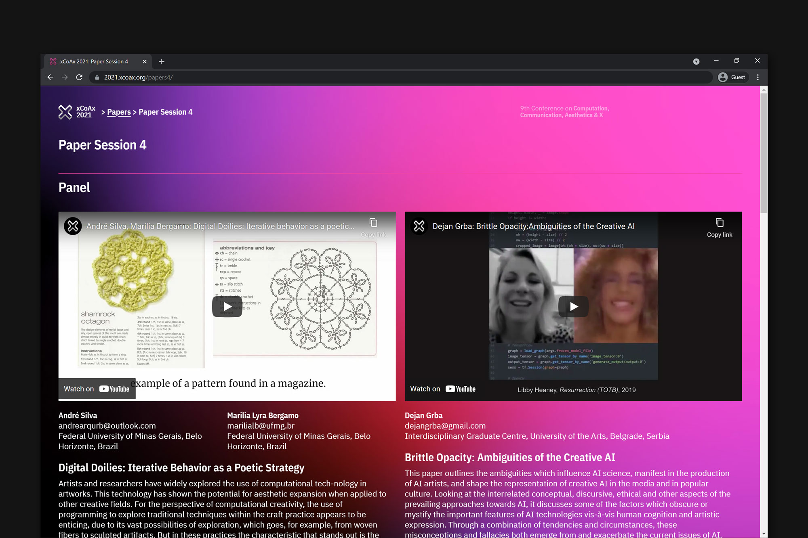

xCoAx .2021

A social network simulation.
It's a narrative based on the online experience of elderly people. The goal is to put any user in the shoes of the elderly and make them more sympathetic to their usual disorientation.
HTML, CSS, JavaScript + P5.JS
With Catarina Lobão, Francisca Marques, Giuliana Almásio, Marta Sousa & Raquel Clemente

The Interface-User Relationship: Applied to Gesture Interactive Interfaces is a publication that aims to explore how one could naturalise the relation between user and interface.
The artifact that complements this issue is called Frameworks for Interfaces. It aims to build a base for a system's interface that could read and interpret human's gestures.

Program built on C++ intended to create a wave of type represented by the repetition of a single character. This wave of letters explores space in three dimensions, as each character moves organically in a seeming depth field.
Group project: Giuliana Almasio, Joana Coelho and Mariana Limões
Photo editing and editorial design for a commissioned publication.
Cabeça magazine, issue #7 "Lust Hatred Ego". 10 pages.


The shared interest among group members for Eastern Europe was a good baseline to this publication. Cyrillic alphabet, bad quality images and space history.
With Inês Alecrim, Gonçalo Silva & Joana Coelho

A showcase of Portugal's charm to Production Services Portugal's new clients. The mood is very light and cheerful.
Digital illustration & lettering accompanied by perky captions.
Photos by Ricardo Conde and Francisco Gomes, PSP Production Portugal
Illustration, Editorial and Copywriting: Mariana Limões


Douro Region is the oldest wine region in the world. Its landscape is marked by a set of deep valleys.
The lino print texture was used to refer to the terraces together with a humanistic typeface representing Douro’s handmade character. The logo works as an open system, as a reaction of the environment where it is put.
PSP is moved by the organised, swift and problem solving world of film production.
The brand's new graphic guidelines are based on their youth and boldness, along with Portugal's colours and textures. The logo’s symbol was not changed, only adjusted to the new graphic identity.

Each of us found a way to cope with the challenging times related to the COVID-19 outbreak. As soon as my faculty closed in March 11th 2020, I knew I had to keep my creativity flowing while classes were on stand-by. Therefore, I started working on the days, and their numbers, that passed by me.
Tools: Illustrator CC, Processing 3